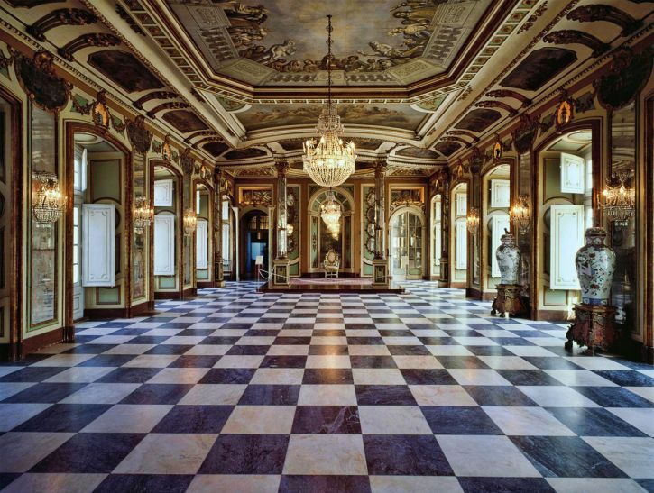

Lisbon Must See Destinations Guide

| Must See Attractions! |
|---|
| Queluz National Palace |
| Vasco da Gama Bridge |
| Igreja de Sao Roque |
| Lisbon Oceanarium |
| Miradouro da Senhora do Monte |
| Praca do Comercio (Terreiro do Paco) |
Work of Paul Truong Nguyen for CS545 Fall 2016. All images and text were taken from other websites as this was a class assignment, solely used for educational purposes only.